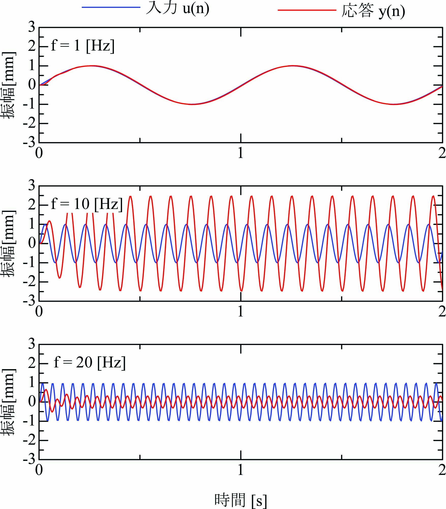

１自由度粘弾性振動系 の振動(運動)方程式は次式となります。
\begin{align} \ddot x + 2\zeta \omega_n\dot x + \omega_n^2x = f,~~~y=x. \label{eq:VivEq} \end{align}ここに、\(m\)は質量、\(\zeta\)は粘性係数、\(\omega_n^2\)は弾性係数です。
１自由度粘弾性振動系\eqref{eq:VivEq}において、サンプリング周期\(T=0.005\)[s]、 \(\omega_n=6.28×10\)[rad/s]、\(\zeta=0.2\) の離散時間状態方程式は次式で記述されます。
\begin{align} \left[ \begin{array}{@{\,}l} x(n+1)\\ \dot x(n+1) \end{array} \right] = \left[ \begin{array}{@{\,}cc} 0.9531&0.004222\\ -18.23&0.8370 \end{array} \right]\left[ \begin{array}{@{\,}l} x(n)\\ \dot x(n) \end{array} \right] + \left[ \begin{array}{@{\,}c} -0.04691\\ 18.23 \end{array} \right]u(n),~~~ y(n)=[1~~0] \left[ \begin{array}{@{\,}l} x(n)\\ \dot x(n) \end{array} \right]. \end{align}初期値\(x(0)=0\)、\(\dot x(0)=0\)とし、入力\(\)を次式の正弦振動で与えます。
\begin{align} u(n) = \sin(2\pi nfT)\label{eq:SineInp} \end{align}入力正弦波\eqref{eq:SineInp}の振幅は\(1\)[mm]、振動数は\(f\)[Hz]です。 振動数\(f=1,10,20\)[Hz]の入力\(u(n)\)に対する応答出力\(y(n)\)を下図に掲示します。
これらの図では入力\(u(n)\)は青線、出力\(y(n)\)を赤線で示しています。
入力正弦波の振動数\(f = 1\)[Hz]の場合、入力\(u(n)\)と出力\(y(n)\)はほとんど一致しています。 したがって、応答\(x(n)\)の振幅は\(1\)[mm]となり、振幅の倍率\(=1\)です。
入力正弦波の振動数\(f = 10\)[Hz]の場合、入力\(u(n)\)の振幅に対して出力\(y(n)\)の振幅が約2.5倍に増加しています。 これは入力振動の角振動数\(2\pi f\)が１自由度粘弾性振動系の固有振動数\(\omega_n = 2\pi ×10\)と一致し、 共振が発生していることを示しています。また、入力振動に対して応答振動の時間遅れが発生しています。 これを位相遅れといいます。位相は１周期\(T\)を１回転として、 時間遅れ\(\tau\)を角度\(2\pi(\tau/T)\)で表現します。
入力正弦波の振動数\(f = 20\)[Hz]の場合、入力\(u(n)\)の振幅に対して出力\(y(n)\)の振幅が約0.25倍に減少しています。 一方、位相遅れは増加し、入力振動と応答振動がほぼ交互に発生していることにも注目です。